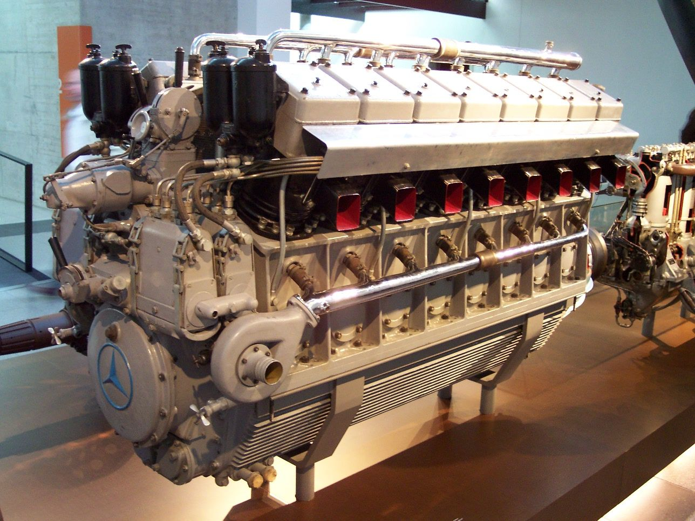

Двигун внутрішнього згоря́ння — різновид теплового двигуна, в якому паливна суміш згорає безпосередньо в робочій камері (всередині) двигуна. Продукти згоряння утворюють робоче тіло. Такий двигун є первинним, хімічним, і перетворює енергію згоряння палива на механічну роботу. Існує велика кількість різноманітних двигунів з внутрішнім згорянням, що відрізняються призначенням, способом віддачі потужності та іншими параметрами.
У створення різних ДВЗ внесли найбільший внесок такі інженери як Джон Барбер (винахід газової турбіни в 1791), Роберт Стріт (патент на двигун на рідкому паливі, 1794), Філіп Лебон (відкриття світильного газу в 1799, перший газовий двигун в 1801), Франсуа Ісаак де Ріваз (перший поршневий двигун, 1807), Жан Етьєн Ленуар (газовий двигун Ленуара, 1860), Раймонд Олександрович Корейво, Фрідріх Артурович Цандер, Вернер фон Браун (реактивні та турбореактивні двигуни, починаючи з 1930-х і закінчуючи програмою Аполлон). Газовий двигун Ленуара в паризькому Музеї мистецтв і ремесел. Перший патент на чотиритактний двигун внутрішнього згоряння отримав ще в 1862 Альфонс Бо де Роша (французький патент № 52593 від 16.01.1862). Проте, винахідником двигуна внутрішнього згоряння часто називають німецького інженера Ніколауса Отто, який у 1862 році розпочав виробництво й продаж двотактних двигунів. У 1866 році Н. Отто та Е. Ланген удосконалили конструкцію двигуна Е. Ленуара, що привело до зростання коефіцієнта корисної дії. У 1876 Отто сконструював чотиритактний двигун. У 1877 році він отримав патент на газомоторний двигун. Цей патент було скасовано у 1886 році на користь патенту, виданого Альфонсу Бо де Роша на його конструкцію чотиритактного двигуна. У жовтні 1877, ще один патент на газомоторний двигун був виданий Ніколаусу Отто і братам Френсісу та Вільяму Кросслі.
Порівняно з двигунами зовнішнього згоряння ДВЗ: